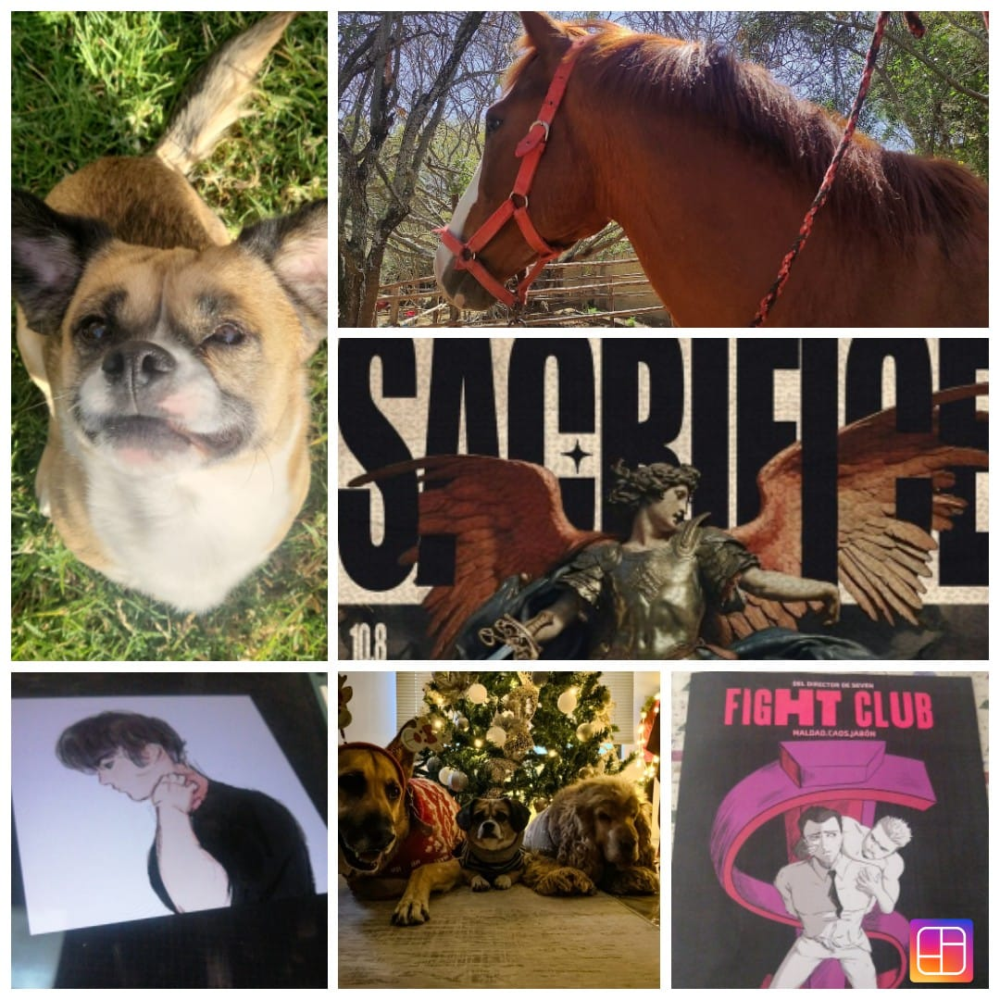

Mis mascotas y familia son lo más importante para mí y me inspiran constantemente. Los juegos y la música también son una gran fuente de inspiración en mi trabajo, el clima que más me gusta es la lluvia o que esté nublado, me gusta que se combine con los verdes de la naturaleza haciéndome sentir calma.
